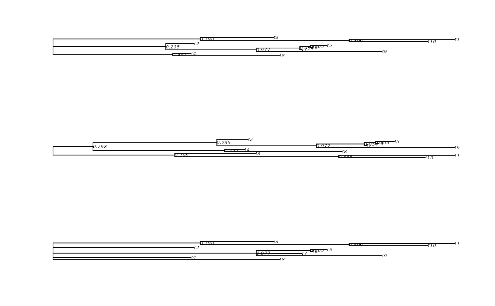

midpoint performs midpoint rooting of a tree. pruneTree
produces a consensus tree.
pruneTree prunes back a tree and produces a consensus tree, for trees
already containing nodelabels. It assumes that nodelabels are numerical or
character that allows conversion to numerical, it uses
as.numeric(as.character(tree$node.labels)) to convert them.
midpoint by default assumes that node labels contain support values.
This works if support values are computed from splits, but should be
recomputed for clades.
keep_as_tip takes a list of tips and/or node labels and returns a tree
pruned to those. If node label, then it prunes all descendants of that node
until that internal node becomes a tip.
Usage
getRoot(tree)
midpoint(tree, node.labels = "support", ...)
# S3 method for class 'phylo'
midpoint(tree, node.labels = "support", ...)
# S3 method for class 'multiPhylo'
midpoint(tree, node.labels = "support", ...)
pruneTree(tree, ..., FUN = ">=")
keep_as_tip(tree, labels)Arguments
- tree
an object of class
phylo.- node.labels
are node labels 'support' values (edges), 'label' or should labels get 'deleted'?
- ...
further arguments, passed to other methods.
- FUN
a function evaluated on the nodelabels, result must be logical.
- labels
tip and node labels to keep as tip labels in the tree
Author
Klaus Schliep klaus.schliep@gmail.com
Examples
tree <- rtree(10, rooted = FALSE)
tree$node.label <- c("", round(runif(tree$Nnode-1), digits=3))
tree2 <- midpoint(tree)
tree3 <- pruneTree(tree, .5)
old.par <- par(no.readonly = TRUE)
par(mfrow = c(3,1))
plot(tree, show.node.label=TRUE)
plot(tree2, show.node.label=TRUE)
plot(tree3, show.node.label=TRUE)

par(old.par)